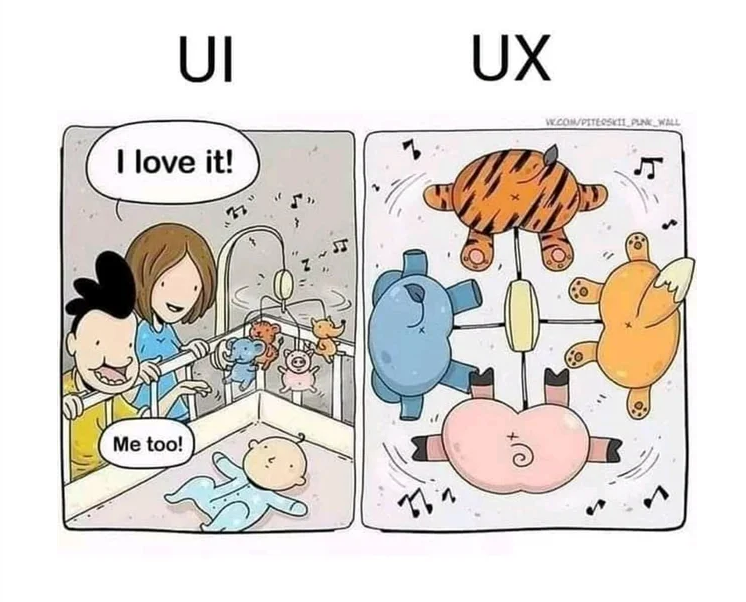
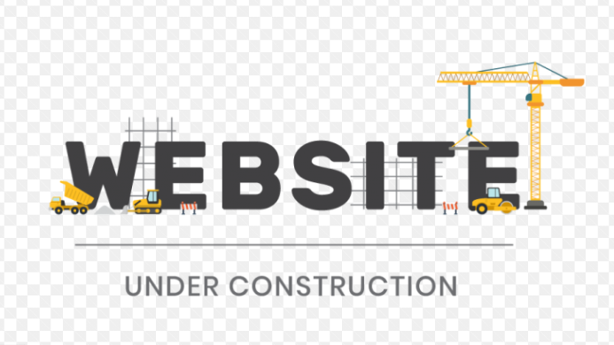

Välkommen till min hörna
UX är en process var vi fokuserar på användarupplevelsen, var vi steg för steg ser hur en idé kommer till liv. Först definierar vi problemlösningen och bollar idéer som genererar lösningar.
Vi bestämmer oss för vilken lösning som bäst tar oss genom vårt problem och visar upp det sedan i ett flöde. Vi gör ett researcharbete var vi bland annat kommer fram till vår målgrupp.
Vi har intervjuer med experter, vi tittar också på hur andra gjort tidigare och tar med oss det vi tyckte va bra och som vi redan vet fungerar. Sedan skissar vi på prototypen och bygger upp den för att sedan kunna göra användartester med personer i vår målgrupp.
Vi dokumenterar resultaten och förbättrar det som behövs. Med all kunskap och insikter färdigställer vi sedan prototypen.
För mig betyder denna process att förstå, undersöka, analysera, designa, utvärdera och färdigställa.

Under Constraction